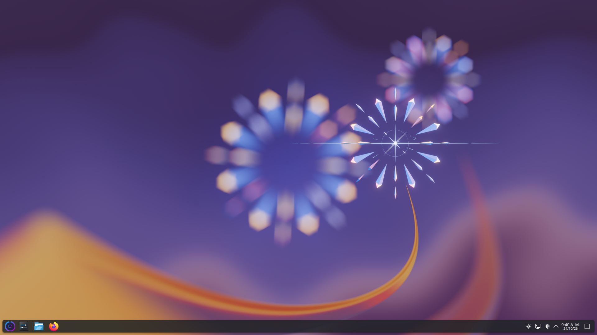

01
Rolling release
Paquetes oficiales de Arch. Siempre actualizado con pacman -Syu.
ArchLatam es la comunidad de Arch Linux en español, portugués y más. Core Linux trae Arch rolling, KDE Plasma, Gnome y snapshots desde el primer arranque.
Core es una ISO de Arch Linux preparada por la comunidad ArchLatam y al mundo: instalador Calamares, escritorio KDE Plasma, Gnome y soporte de snapshots para que puedas empezar a trabajar en minutos.
Paquetes oficiales de Arch. Siempre actualizado con pacman -Syu.
Escritorio moderno, estable y familiar. Ideal para quien viene de Windows.
Puntos de restauración del sistema. Si algo falla, vuelves atrás en segundos.
Calamares guiado. Particiones, usuario, idioma y arranque sin tocar la terminal si no quieres.
Acceso completo a los repos oficiales y al AUR. Misma base que un Arch puro.
Comunidad, documentación y soporte en español, Ingles y portugués. Zona horaria y teclados locales.
Al arrancar la ISO live, una ventana clara para instalar o seguir explorando el sistema.
KDE Plasma listo para trabajar.

Última ISO publicada. Después de bajarla, verifica el checksum y grábala en un USB.
Guarda el archivo .sha256 en la misma carpeta que la ISO y ejecuta:
sha256sum -c Core-2026.10.27-x86_64.iso.sha256
Debe mostrar OK. Si falla, vuelve a descargar la ISO.
Con dd (sustituye sdX por tu dispositivo):
sudo dd if=Core-2026.10.27-x86_64.iso of=/dev/sdX bs=4M status=progress && sync
Usa Ventoy, Rufus o balenaEtcher. Elige la ISO y el USB, y graba.
Foros, guías, chat y gente que usa Arch en Latinoamérica. Si te gusta Arch, este es tu espacio.
Guías de instalación y configuración en español.
Ir a la wiki →Código, issues y contribuciones de la comunidad.
Ver repositorios →Jose Dragic · Joaquín Décima · Faustino Echevarrieta
Contribuir →Antes de abrir un ticket, revisa la documentación y los issues conocidos. La comunidad responde en español Ingles y portugués.
Guías de instalación, particiones, drivers y post-instalación. Proximamente
Abrir wiki →Bugs de la ISO, del instalador o de la app de bienvenida.
Reportar problema →Preguntas generales, configuración y consejos de uso diario.
Canales oficiales →Core-2026.10.27)cat /etc/os-release && uname -r
Ese comando muestra la versión del sistema y del kernel.
Prueba USB en otro puerto, desactiva Secure Boot temporalmente, o graba de nuevo con Ventoy/Rufus en modo DD. Confirma que la máquina sea x86_64.
Conecta por cable si puedes. Si es Wi‑Fi, anota el chipset (lspci -nn | grep -i net) y busca el firmware en la wiki de Arch o en nuestros issues.
Ejecuta desde terminal calamares y copia el error. Revisa espacio en disco, particiones y que el medio USB no esté dañado (verifica SHA256).
En el menú de arranque prueba opciones de nomodeset. Para NVIDIA/AMD consulta la documentación de Arch sobre drivers propietarios u open source.
Descarga la ISO, arranca en live e instala cuando quieras.
Descargar Core ISO